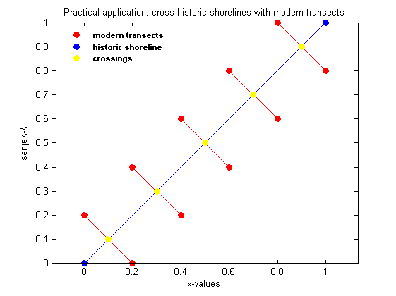

Use findCrossings
The routine findCrossings was developed in the context of the development of duneerosion formulations. It is a very generic and robust routine to cross the lines of two functions (x1 and x2-values monotonically in- or decreasing). The routine takes the x and z values of the two functions as input. The working of findCrossings is best illustrated with the following example:
define function 1:
x1 = [0 1]; z1 = [0 1];
define function 2:
x2 = [0.25 0.75]; z2 = [0.5 .5];
run findCrossings
[xcr zcr x1_new_out z1_new_out x2_new_out z2_new_out crossdir] = findCrossings(x1, z1, x2, z2); %#ok<*NASGU> crossings = [xcr zcr] %#ok<*NOPTS>
crossings =
0.5000 0.5000
plot the results
figure; ph(1) = plot(x1_new_out,z1_new_out,'-or','markerfacecolor','r'); hold on; ph(2) = plot(x2_new_out,z2_new_out,'-ob','markerfacecolor','b'); ph(3) = plot(xcr,zcr,'oy','markerfacecolor','y'); legendtxt = {'polygon 1','polygon 2','crossing'}; legend(ph,legendtxt,'FontWeight','bold','FontSize',8,'location','northwest'); legend('boxoff') axis equal; box on title({'Testcase: findCrossings'; 'flag: keeporiginalgrid'}) xlabel('x-values') ylabel('y-values', 'Rotation', 270, 'VerticalAlignment', 'top')
Add crossings and synchronise grids of functions 1 and 2
Running findCrossings with the flag 'synchronisegrids' adds the location(s) of the crossing(s) to functions 1 and 2 (NB: the default flag used is 'keeporiginalgrid').
define function 1:
x1 = [0 1]; z1 = [0 1];
define function 2:
x2 = [0.25 0.75]; z2 = [0.5 .5];
run findCrossings
[xcr zcr x1_new_out z1_new_out x2_new_out z2_new_out crossdir] = findCrossings(x1, z1, x2, z2, 'synchronizegrids');
crossings = [xcr zcr]
crossings =
0.5000 0.5000
plot the results
figure; ph(1) = plot(x1_new_out,z1_new_out,'-or','markerfacecolor','r'); hold on; ph(2) = plot(x2_new_out,z2_new_out,'-ob','markerfacecolor','b'); ph(3) = plot(xcr,zcr,'oy','markerfacecolor','y'); legendtxt = {'polygon 1','polygon 2','crossing'}; legend(ph,legendtxt,'FontWeight','bold','FontSize',8,'location','northwest'); legend('boxoff') axis equal; box on title({'Testcase: findCrossings'; 'flag: synchronisegrids'}) xlabel('x-values') ylabel('y-values', 'Rotation', 270, 'VerticalAlignment', 'top')
Crossing two arbitrary polygons
An extension to findCrossings was made with the function findCrossingsOfPolygonAndPolygon. This routine finds all crossings between two arbitrary polygons. What is special about this function is that the x-values of both polygons do NOT need to be monotonically increasing. They can be completely arbitrary. Even vertical sections are possible.
To illustrate the working of findCrossingsOfPolygonAndPolygon we run the following example:
define polygon 1:
x1 = [427668 427801 427926 428208 428489 428637 428725 428740 428703 428548 428333 428008 427719 427697 427527 427549 427845 428045 428356 428503]'; z1 = [5.09376e+006 5.09371e+006 5.09368e+006 5.09365e+006 5.09363e+006 5.09365e+006 5.09371e+006 5.09376e+006 5.09392e+006 5.09395e+006 5.09398e+006 5.09396e+006 5.09404e+006 5.09408e+006 5.09431e+006 5.09444e+006 5.09451e+006 5.09452e+006 5.09442e+006 5.09437e+006]';
define polygon 2:
x2 = [427037 427318 427948 428801 429595 429906 429586 428898 428025 427531 427337 427424 427987 428607 429208 429440 429150 428617 428074 427715 427754 428151 428578 428810 428675 428239 427880 427909 428132 428316 428423 428432 428297]'; z2 = [5.09383e+006 5.09322e+006 5.09292e+006 5.09274e+006 5.09309e+006 5.09403e+006 5.09473e+006 5.09525e+006 5.09527e+006 5.09485e+006 5.0943e+006 5.09376e+006 5.09333e+006 5.09331e+006 5.09348e+006 5.09412e+006 5.09474e+006 5.09496e+006 5.09477e+006 5.09426e+006 5.09382e+006 5.09358e+006 5.09356e+006 5.09401e+006 5.09444e+006 5.09451e+006 5.09418e+006 5.09388e+006 5.09373e+006 5.09371e+006 5.09382e+006 5.09403e+006 5.09413e+006]';
activating the dbstate, both polygons and the identified intersections are plotted
dbstate on
test the routine with the above defined polygons
[xcr, zcr] = findCrossingsOfPolygonAndPolygon(x1,z1,x2,z2); crossings = [xcr zcr]
crossings =
1.0e+06 *
0.4280 5.0937
0.4286 5.0936
0.4287 5.0938
0.4284 5.0940
0.4277 5.0940
0.4279 5.0940
0.4279 5.0945
0.4282 5.0945
deactivate the dbstate
dbstate off
Practical application: cross historic shorelines with modern transects
A practical application where finding arbitrary line crossings can come in handy is the analysis of shoreline evolution based on observations.
Modern monitoring approaches often measure crossshore transects from which e.g. with a mean high and low water level shoreline positions may be extracted. This is a typical application where the findCrossings routine can be of use. If for a given transect measurements for a number of years are available, the evolution of the shoreline position may be analysed.
Full transect measurements, however, are usualy not available for much more than several years to several decades. To expand the time horizon of the analysis the transect based timeserie may be supplemented with information from arial photographs, historic charts and satellite imagery. The routine findCrossingsOfPolygonAndPolygon has been developed especially for this purpose. It is highly robust and works efficiently even when thousands of transects are involved; as is the case for example when working with lidar surveys.
define polygon 1:
x1 = [0.0 0.2 0.2 0.2 0.4 0.4 0.4 0.6 0.6 0.6 0.8 0.6 0.8 1.0]'; z1 = [0.2 0.0 nan 0.4 0.2 nan 0.6 0.4 nan 0.8 0.6 nan 1.0 0.8]';
define polygon 2:
x2 = [0 1]; z2 = [0 1];
test the routine with the above defined polygons
warning off %#ok<*WNOFF> % to eliminate output regarding the nans in the z1 values [xcr, zcr] = findCrossingsOfPolygonAndPolygon(x1,z1,x2,z2); warning on %#ok<*WNON> crossings = [xcr zcr]
crossings =
0.1000 0.1000
0.3000 0.3000
0.5000 0.5000
0.7000 0.7000
0.9000 0.9000
plot the results
figure; ph(1) = plot(x1,z1,'-or','markerfacecolor','r'); hold on; ph(2) = plot(x2,z2,'-ob','markerfacecolor','b'); ph(3) = plot(xcr,zcr,'oy','markerfacecolor','y'); legendtxt = {'modern transects','historic shoreline','crossings'}; legend(ph,legendtxt,'FontWeight','bold','FontSize',8,'location','northwest'); legend('boxoff') axis equal; box on title('Practical application: cross historic shorelines with modern transects') xlabel('x-values') ylabel('y-values', 'Rotation', 270, 'VerticalAlignment', 'top')